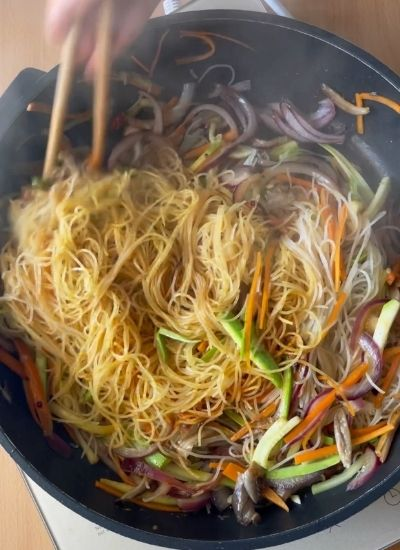
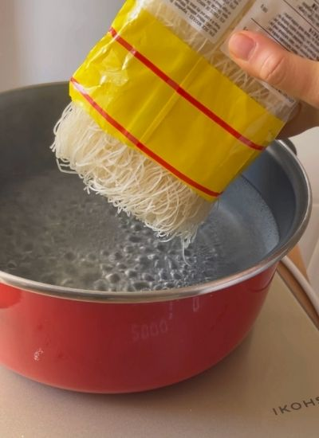
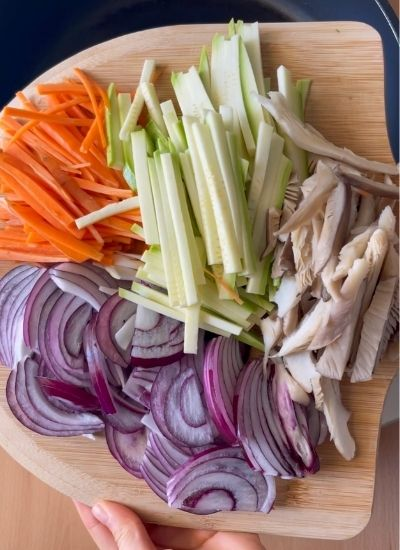
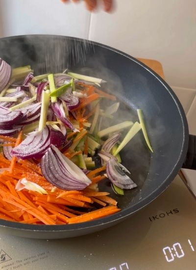
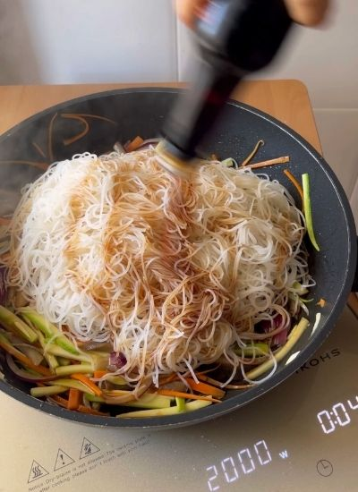

Principales · China
← Recetas
Fideos de Arroz Chinos con Verduras

Preparación
- Calienta agua abundante. Cuando hierva, cuece los fideos de arroz algo menos del tiempo que indique el paquete.

- Pásalos por agua fría para cortar la cocción.
- Corta las verduras elegidas en juliana.

- En una sartén con aceite a fuego fuerte, saltea las verduras unos 2 minutos.

- Añade los fideos, sal, los 30 mL de salsa de soja…

- …la 1/2 cucharada de curry y la cucharada de Laoganma.
- Saltea todo junto unos 5 minutos y rectifica de sal. Sirve.